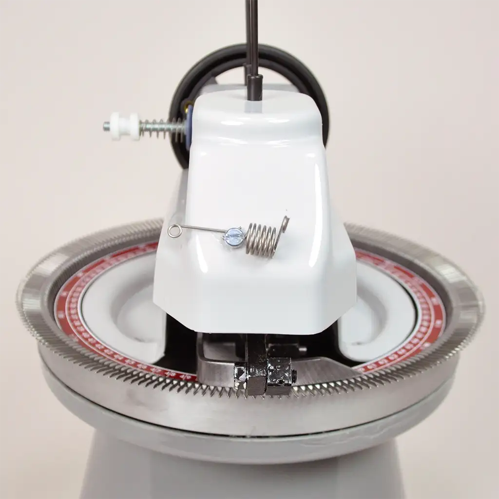

Circular Linker Machine
What Is a Linker?
A circular linker is a mechanical tool used to join knitted pieces together. It uses a rotating needle bed to stitch edges cleanly and efficiently.
How I Use It
I use my linker to connect squares made on my flat bed machine. This allows me to build larger projects like blankets without hand-seaming.
Benefits of Linking
Linkers create uniform seams and save time. They're ideal for assembling garments, accessories, or modular pieces.
Fun Fact: Linkers were originally used in sock factories to close toes quickly and cleanly.
Hannah RoseProvo, UT
Call Me For More Info (Not actually my number)
Linking is faster than hand-seaming and produces professional results.
It’s especially useful when working with multiple panels or repetitive shapes.
Perfect for modular
blankets.
- Rotating needle bed
- Precise seam alignment
- Time-saving assembly
- Align knitted pieces
- Feed into linker
- Stitch edges
- Seaming
- Joining two pieces of fabric
- Modular
- Made of repeatable units
- Toe Closure
- Final step in sock construction
Learn more at Knit It Now and Ravelry